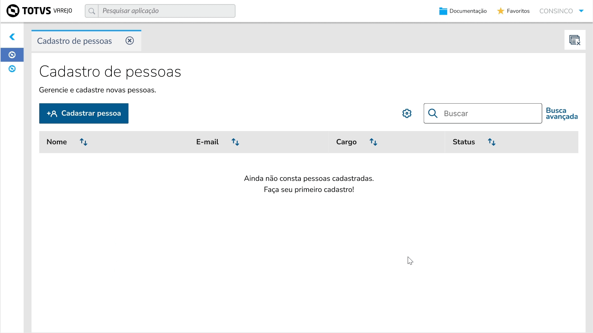

O processo
O problema
Em um cenário com múltiplos times de produto, manutenções menores eram conduzidas por POs e desenvolvedores sem a participação direta de designers. Apesar de existir um Design System e um UI Kit estruturado, fluxos comuns eram montados de formas diferentes entre os produtos — gerando inconsistência visual, retrabalho e dúvidas recorrentes.
Meu papel
Liderei a iniciativa de ponta a ponta: mapeamento dos padrões existentes, análise de uso dos componentes do DS, criação dos templates no Figma, documentação no portal interno, capacitação dos times e rodadas de validação com POs e desenvolvedores de 3 squads.
O resultado
Repositório unificado com 10 fluxos documentados, adotado espontaneamente pelos times como referência para manutenções rápidas. POs e desenvolvedores passaram a aplicar os padrões com autonomia — sem depender de um designer em cada entrega.
Como foi feito
De padrões dispersos a uma fundação compartilhada
O projeto foi conduzido de forma colaborativa e iterativa — partindo do mapeamento do que já existia até a entrega de uma biblioteca de templates prontos para uso, com documentação que qualquer pessoa do time conseguia seguir.
1 · Mapeamento interno
Identifiquei cerca de 10 fluxos recorrentes entre os produtos — cadastro de pessoa, edição de registros, upload de arquivos, envio de notificações. Esse mapeamento revelou onde o DS estava sendo usado corretamente e onde havia lacunas e divergências.
2 · Templates visuais no Figma
Criei templates prontos para uso com GIFs explicativos e exemplos de aplicação — permitindo que POs e desenvolvedores aplicassem os fluxos sem precisar interpretar o DS do zero. Cada template seguia as diretrizes de componentes já existentes.
3 · Documentação no portal interno
Documentei quando e como aplicar cada padrão: recomendações de contexto, boas práticas, exemplos visuais e links diretos para os templates no Figma. A linguagem foi pensada para POs e devs — não para designers.
4 · Capacitação dos times
Organizei uma news interna e uma vídeo-aula introdutória demonstrando o uso dos materiais. O objetivo era incentivar adoção espontânea , não criar dependência de treinamento contínuo.
5 · Validação com POs e devs
Realizei rodadas de feedback com os 3 squads, ajustando nomenclaturas, fluxos e recomendações visuais conforme as necessidades práticas de cada time. As alterações feitas pelos devs com base no material foram apresentadas e validadas em conjunto.
Decisão central — documentar para quem não é designer
A maior decisão do projeto foi calibrar a linguagem e o nível de detalhe para o público real: POs e desenvolvedores. Uma documentação de DS escrita para designers seria ignorada. Os GIFs explicativos, os exemplos de aplicação e a estrutura de "quando usar" foram escolhas deliberadas para garantir que o material fosse consultado — não arquivado.
Novo cadastro — padrão documentado
O template de novo cadastro cobre desde o botão de ação até o comportamento de empty state, boas práticas de agrupamento de campos, diferenciação de obrigatório e opcional, e mensagens de erro. Cada decisão foi documentada com justificativa de UX — não só como fazer, mas por quê.
Decisão de design
Documentar o empty state como parte do fluxo de cadastro — e não como estado isolado — foi uma decisão baseada nos erros mais comuns encontrados nos produtos: telas sem orientação para o primeiro acesso do usuário. O template inclui o texto de apoio como elemento obrigatório do padrão.

Cadastro em etapas — Stepper como padrão
Para cadastros longos, o template define o uso do Stepper com navegação entre etapas e resumo final. A documentação explica por que o Stepper reduz abandono em formulários extensos — usando uma analogia que POs e devs já conhecem: o acompanhamento de pedidos em delivery.
Decisão de design
Incluir a opção de voltar à etapa anterior e o resumo do que foi preenchido não foram sugestões — foram definidos como requisitos do padrão. A pesquisa com usuários em outros produtos da TOTVS mostrou que a falta dessas opções gerava frustração e repreenchimento desnecessário.

Nota: Por restrições de confidencialidade, os artefatos compartilhados representam uma seleção dos templates desenvolvidos. O repositório completo inclui outros fluxos não divulgados neste portfólio.
Nota: Por restrições de confidencialidade, os artefatos compartilhados representam uma seleção dos templates desenvolvidos. O repositório completo inclui outros fluxos não divulgados neste portfólio.